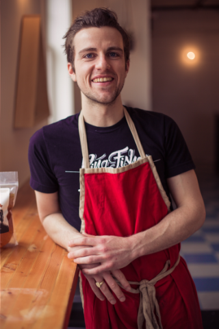
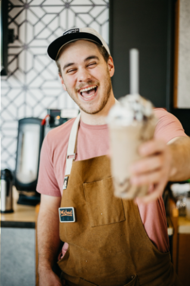

About Us!
Welcome to Wonder Sweets, a bakery founded by Anna who once created delicious treats based on different emotions all from the comfort of her home. She has now expanded her business online and hopes to open her first street store soon! Now a team of three, Wonder Sweets seeks to deliver the best tasting treats that embodies whatever emotions you were feeling at the time of order, or hope to spread!
Our Story
Anna had always dreamt of owning her own bakery. After years of working in various bakeries and honing her skills, Anna had come up with the concept of customizing your own treats tailored to your emotions. However, she was hesitant on making the commitment to start the business. She opted to take commissions from those around her, and before she knew it, she brought a small customer base! It was about a year ago that she decided to finally take on a team and start a site where we she began to take on orders.
Meet the Team!
Come and meet the team!
This is the team that's responsible for making your tasty wonder sweets! Everyone on our team has had years of experience and are deeply passionate with the arts of baking.
Anna Hawkins
Founder

Hi! My name is Anna and I'm the founder of Wonder Sweets! I am super excited to share my journey of taking on the world by storm with our Wonder Treats. After taking comissions personally, I realized that I had such a great passion for this idea and wanted to unleash it, and now here I am along with my team!
Jamie Preston
Head Pastry Chef
Hey there, my name is Jamie and I'm the head pastry chef of Wonder Sweets! I've known Anna ever since we were in high school and we both shared the same passion for baking. When she first brought of the idea of expanding her little business venture, I immediately volunteered myself as the head of the kitchen.
Brandon Cohen
Assistant Pastry Chef
Whats up! The name's Brandon and I'm the assistant pastry chef! I heard about Wonder Sweets through word and mouth and found myself super interested in the concept...Did some digging and got in touch with both Anna and Jamie, and now here I am! I've been baking all my life and even attended culinary school for a short while.